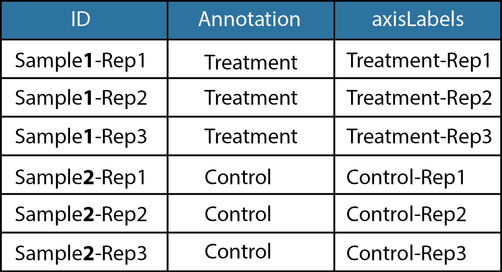

If no data processing has been done a new file can be uploaded. Else refresh the page to wipe all data and re upload your file. As of this version, only MaxQuant output is supported. If you don't have your own data, we have provided tutorial data: proteinGroupsTutorial.txt The tutorial data is real maxQuant data that has been blinded and chosen specifically to showcase the plotting features. MaxQuant uses what is called the label free quantification or LFQ algorithm for quantification. This needs to be enabled when performing the searches and outputs relavent columns for ProVision. The raw intensity is available as well and can be accessed by choosing intensity in the data upload tab, however we find this to be useful in specific cases only. It is recommended to use LFQ intensities for most label free experiments. For further reading, see the manuscript about the maxLFQ algorithm here.
MaxQuant folder structure is as follows:
specified output folder > combined > txt > proteinGroups.txt
Adding or removing columns is disabled by default because this functionality can only be used once prior to filtering. If you have used ProVision and would like to re analyse the data without specific samples this is how you could do it. However, we recommend to rather research the mass spec data without the outlier samples and to keep the number of replicates constant across groups. Thus if a replicate is dropped from one condition, a replicate should be dropped from all other samples as well. This is important for statistical tests
Unique peptides are simply the number of unique peptides associated with each protein group. For instance, a protein group can be assigned with no unique peptides as amino acid sequences can be shared between different proteins. Furthermore the assignment of peptides to proteins is based on a probability, thus having at least two unique peptides gives a greater chance that a specific protein was actually observed. Also, the intensity is based on the sum of the unique peptides observed in the maxLFQ algorithm. Thus by Increasing the number of unique peptides to filter on increases the strictness of the data set but also the accuracy of the quantification. Refer to the maxLFQ paper to read more about the role of unique peptides in quantification.
Transformation of the intensity data is done to satisfy the requirement for normally distributed data when performing parametric statistics.Also, having normally distributed data will help with imputation, which will be discussed later in this tutorial. Typically, intensity data is log normally distributed and to obtain a normal distribution the data is log transformed using base 2. This is chosen by default, however to see the effect of this step the log2 checkbox can be unclicked and the results can be viewed downstream. To restore the results, check the transformation box again and click the start filtering button.
 Assigning groups is how ProVision knows what to compare statistically and many other functions. It is thus of utmost importance to have this input done correctly, if for any reason the data is mislabeled in some way we recommend to re upload your data and start again. The ID column is your data extracted from MaxQuant proteinGroups.txt file. The annotation column must be changed to reflect relevant groups as depicted in the figure. Also, each group should have the same name, i.e. all replicates of control must be named "control" and all replicates of treatment must be named "treatment". This table has a third column called AxisLabels and these are simply the axisLabels that will be used on relevant positions. If you are happy with the names in the ID column the AxisLabels column does not need to be edited. If you do choose to edit this column make sure the names are unique, again see the example in the figure. It is possible to copy, paste and drag in the table similar to Microsoft excel. Because this part is so sensitive to the functionality of provision we lock in and confirm your submission and it cannot be changed within the same session. To change this you would need to reload the page.
Filtering for valid values simply means filtering for missing values, during log transformation these will be labelled as NA and thus register as non valid. These values can occur due to two main factors, 1:absent across replicates or2:absent due to experimental conditions.
Addressing the first case, it is completely possible that the spectra contributing to a specific protein is missed across different mass spec runs or different replicates of a condition. This does not mean that this protein is missing, it simply means that the mass spectrometer did not observe it in a specific run. To address we can choose to filter out proteins that were seen in at least twice in a total of three replicate runs. Thus we are confident that this protein exists yet allow for some lenience with the knowledge of how the mass spectrometer operates. changing the number to three (if you have three replicates) would only consider proteins that were observed in each replicate of a sample and thus be the strict case.
In the second case, it can be conceived that certain proteins will not be expressed in response to a condition, as per example addition of a drug in a cell line. This missing data is thus important to keep in the calculations as it likely contains the proteins activated in response to the drug. To do this we choose in at least one group where groups were defined in the assigned groups section. By choosing the in each group option the minimum value filtering parameter will be applied to each group defined in the assigned groups section. To achieve the strictest possible filtering, assign the minimum values equal to your number of replicates and choose in each group. While it might be tempting to keep data as strict as possible, using this filtering parameter discards a large amount of usable data which could contribute to your phenotype. However, if you do decide to filter at the most strict level there will be no residual missing values and you are done with the section and imputation can be skipped
Missing values can and will affect statistical tests, while it can be dealt with during the test we find that the statistical test does not perform as well. In order to address the issue of missing values we impute them. Imputation simply refers to making up values in a clever way, the simplest form of imputation is using the mean of a given data set and using that as a default value for all missing data. However it should be immediately apparent that this is a bad idea as we are working with protein expression. Again it is either one of two cases contributing to our missing data, either the mass spec did not observe the spectra associated with a specific protein or the protein was simply not expressed. Regardless of the case it remains true that the expression of the missing value is below the detection limit. Thus it makes sense to determine the mean expression for identified proteins in each replicate of each group and give our missing proteins values within this range. This simply simulates a very low, yet detectable level of expression. This is especially powerful when combined with the filtering parameters in the previous section. see the figure for an example on how the imputation would work. We have provided options to alter the width of the standard deviation and the amount by which the random numbers are shifted based on the units of standard deviation from the valid data. This can dramatically alter the significance tests and should not be altered unless there is a reason for it. These numbers have been optimized previously. For more information see the publication on Perseus, another fantastic and versatile program for MaxQuant data. Other machine learning methods can be used to impute data, which we will likely introduce in later versions. However, truncated normal distributions work well for the majority of proteomics experiments.
Centering the median can be useful in some cases as an additional mechanism to normalize data. This will center all data around zero, thus if there is major machine variability centering the median can reduce this and normalize the data across replicates that deviate for non-biological reasons.